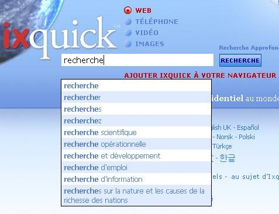

Explication des suggestions de recherche | ||
|
Q: Comment faire pour activer les suggestions de recherche ? A: Vous pouvez activer les suggestions de recherche en sélectionnant cette option sur la page 'Préférences'. La page 'Préférences' est accessible sur toutes les pages d'Ixquick. |  | |
|
Q: Comment fonctionnent les suggestions de recherche d'Ixquick ? A: Lorsque vous tapez une requête, nous comparons les termes de votre requête à une grande liste de suggestions issues de suggestions générales, et les termes les plus utilisés correspondant à votre requête sont affichés par ordre de popularité. | ||
|
Q: En quoi les suggestions de recherche d'Ixquick se différencient-elles des autres moteurs de recherche ? A: La plupart des autres moteurs de recherche se basent sur les recherches effectuées par les utilisateurs pour fournir des suggestions de recherche. Ainsi, il suffit de taper votre requête pour savoir ce que les autres recherchent le plus. En tant que pionnier de la protection de la confidentialité des utilisateurs, Ixquick ne se permet pas cela. Nous affichons les suggestions générales pertinentes pour toute requête saisie. | ||
|
Q: Alors, d'où viennent les suggestions d'Ixquick ? A: Nos suggestions proviennent de diverses sources, allant de mots du dictionnaire à des pages d'intérêt commun disponibles librement sur Internet, comme les pages de Wikipedia. | ||
|
Q: Les suggestions sont-elles disponibles dans toutes les langues ? A: Oui, les suggestions sont disponibles dans toutes les langues proposées par Ixquick. | ||
|
Q: Est-ce qu' Ixquick affiche également des suggestions payées ? A: Non. Les suggestions sont basées uniquement sur leur popularité relative. Aucune publicité n'entre en jeu. | ||
|
Q: Je vois des suggestions en anglais pour certains mots-clés, alors que j'utilise Ixquick dans une autre langue. Pourquoi ? A: Il est évident que l'anglais est la langue principale d'Internet. Bien que notre algorithme renvoie d'abord les suggestions spécifiques à votre langue, au cas où il n'y a pas suffisamment de suggestions correspondant à votre requête dans votre langue préférée, nous faisons des suggestions en anglais. Les suggestions dans votre langue sont naturellement affichées en premier. | ||
|
Q: Puis-je m'attendre à voir des suggestions personnalisées à l'avenir ? A: Comme vous le savez, nous n'enregistrons aucune information personnelle relative à nos utilisateurs. Nous ne pouvons donc pas proposer de suggestions personnalisées, car cela constituerait une atteinte à votre confidentialité. | ||
|
Q: Je ne veux pas que mon enfant reçoive des suggestions de termes pour adultes. Puis-je m'en assurer ? A: Bien sûr. Les suggestions fonctionnent de manière synchronisée avec vos paramètres de filtre familial Internet/Photos. Si vos paramètres de filtre sont configurés pour filtrer les résultats pour adultes lors des recherches, notre algorithme fera de son mieux pour ne pas afficher les suggestions comprenant des termes pour adultes. | ||
|
Q: Mes suggestions de recherche sont activées, mais je ne vois aucune suggestion. Pourquoi ? A: Veuillez vérifier que votre navigateur autorise Javascript. C'est une condition indispensable au fonctionnement des suggestions de recherche. | ||
|
Q: Je n'utilise pas de 'cookies', ni les supprime régulièrement. Puis-je quand même utiliser l'option de suggestions de recherche ? A: Oui. Sachant que nous sommes un moteur de recherche axé sur la confidentialité, nous avons créé une option 'Générer URL', qui vous permet d'enregistrer vos préférences dans une URL, plutôt que d'utiliser un cookie. L'option 'Générer URL' se trouve au bas de la page 'Préférences'. |
||